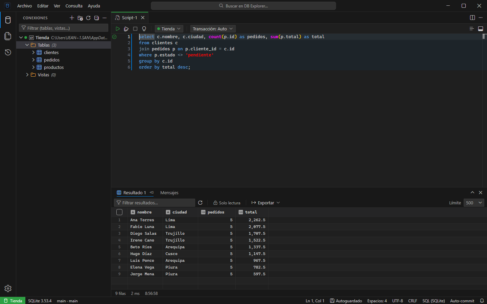
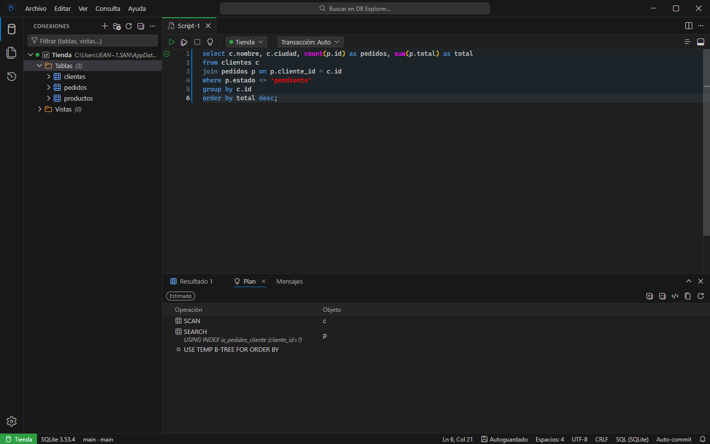

Cuatro motores, una sola interfaz
PostgreSQL, MariaDB/MySQL, SQLite y SQL Server (incluidos RDS, Aurora y Azure SQL) con el mismo árbol, editor y grilla.
Gratis y de código abierto · Windows 10 / 11
Explora y consulta PostgreSQL, MariaDB/MySQL, SQLite y SQL Server desde una sola aplicación ligera. Sin cuentas, sin nube y con tus scripts como archivos.

PostgreSQL, MariaDB/MySQL, SQLite y SQL Server (incluidos RDS, Aurora y Azure SQL) con el mismo árbol, editor y grilla.
Monaco con autocompletado según tu catálogo (CTE y subconsultas incluidos), formateo, multicursor y atajos que ya conoces.
Miles de filas sin trabarse, con orden, filtro rápido, visor de valores y formatos de datos que se cambian en un solo lugar.
Ve cómo el motor ejecutará tu consulta, estimado o real, con avisos de recorridos completos y estimaciones erradas.
Cambia celdas en la grilla y guarda en una transacción. Abre procedimientos y funciones, edítalos y aplícalos con Ctrl+S.
Cada script es un .sql en tu espacio de trabajo, con guardado automático y pestañas que se restauran al volver.
Copia a Excel, CSV, JSON, Markdown o INSERT. Exporta a CSV, JSON, XLSX o SQL sin cargar todo en memoria.
Paleta de comandos, abrir objetos con Ctrl+P y atajos personalizables con el formato de VS Code.
Trabajas con datos sensibles, así que la protección no es un extra. Nada sale de tu equipo salvo las conexiones a tus bases.
UPDATE o DELETE sin WHERE
Gratis, sin cuenta y con el código abierto bajo licencia MIT.
Descargar para Windows¿Prefieres no instalar? También hay una versión portable.
El instalador aún no está firmado, así que Windows puede mostrar «Windows protegió su PC». Pulsa Más información y luego Ejecutar de todos modos.